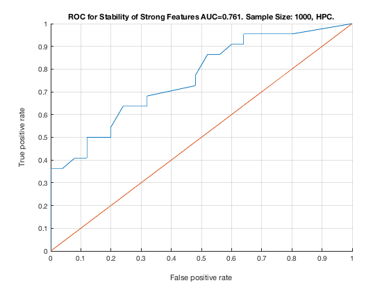

TieNet. Sample Size: 1000. HPC.
unit_stability_type(1000, 1, "TieNet")
Table 8. Stability by Type. Sample Size: 1000, HPC.
____________________________________________________
SELECTED COUNTS: Strong:=22, Weak=23, Irrelevant=2
TOTAL COUNTS: Strong:=23, Weak=26, Irrelevant=4
Feature_Number Stability Type Path_Length N_MBS
______________ _________ ____________ ___________ _____
23 ' 0.612 ' ' STRONG ' 3 0
20 ' 0.260 ' ' STRONG ' 3 0
22 ' 0.226 ' ' STRONG ' 2 0
21 ' 0.162 ' ' STRONG ' 1 0
19 ' 0.134 ' ' STRONG ' 2 0
18 ' 0.086 ' ' STRONG ' 1 0
6 ' 0.072 ' ' STRONG ' 3 0
11 ' 0.056 ' ' STRONG ' 4 0
40 ' 0.052 ' ' weak ' 3 0
10 ' 0.050 ' ' STRONG ' 4 0
39 ' 0.050 ' ' weak ' 4 0
27 ' 0.048 ' ' weak ' 6 0
17 ' 0.042 ' ' STRONG ' 4 18
5 ' 0.034 ' ' STRONG ' 3 36
33 ' 0.030 ' ' weak ' 8 36
36 ' 0.030 ' ' weak ' 8 36
8 ' 0.028 ' ' STRONG ' 2 54
4 ' 0.026 ' ' STRONG ' 4 81
16 ' 0.026 ' ' STRONG ' 2 162
25 ' 0.026 ' ' weak ' 6 162
24 ' 0.024 ' ' weak ' 4 162
44 ' 0.024 ' 'irrelevant' Inf 162
3 ' 0.022 ' ' STRONG ' 4 216
14 ' 0.020 ' ' STRONG ' 3 324
28 ' 0.020 ' ' weak ' 5 324
34 ' 0.020 ' ' weak ' 8 324
38 ' 0.020 ' ' weak ' 5 324
52 ' 0.020 ' ' weak ' 4 324
15 ' 0.018 ' ' STRONG ' 3 432
2 ' 0.016 ' ' STRONG ' 2 540
12 ' 0.016 ' ' STRONG ' 1 675
43 ' 0.016 ' 'irrelevant' Inf 675
45 ' 0.014 ' ' weak ' 7 675
9 ' 0.012 ' ' STRONG ' 3 900
51 ' 0.012 ' ' weak ' 4 900
53 ' 0.010 ' ' weak ' 5 900
7 ' 0.008 ' ' STRONG ' 1 1125
26 ' 0.006 ' ' weak ' 5 1125
30 ' 0.004 ' ' weak ' 10 1125
46 ' 0.004 ' ' weak ' 7 1125
49 ' 0.004 ' ' weak ' 6 1125
13 ' 0.002 ' ' STRONG ' 2 1350
29 ' 0.002 ' ' weak ' 11 1350
32 ' 0.002 ' ' weak ' 8 1350
35 ' 0.002 ' ' weak ' 7 1350
37 ' 0.002 ' ' weak ' 6 1350
50 ' 0.002 ' ' weak ' 5 1350
Figure 8. ROC for Stability of Strong Features AUC=0.761. Sample Size: 1000, HPC.
__________________________________________________________________________________
